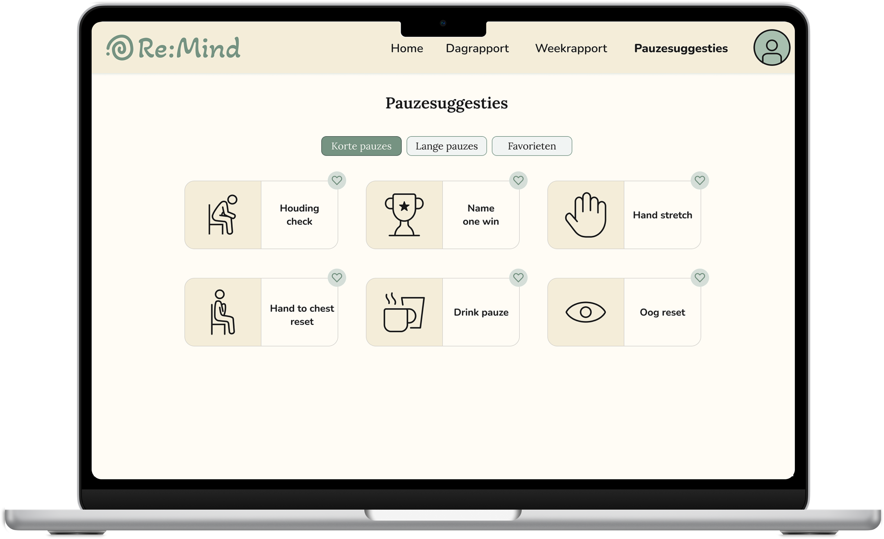

Pauzesuggesties
Een pauze moet herstellend werken, niet uitputtend. Re:Mind biedt een uitgebreide collectie van pauzesuggesties en korte hersteloefeningen die gebruikers helpen om tot rust te komen op een gezonde manier. Als je een gezond aantal herstellende pauzes neemt, zal je concentratie verbeteren.